CALENDARIO
MINA
Il progetto nasce da un lavoro scolastico durante il primo periodo del primo anno di Università. Si chiedeva di progettare e costruire autonomamente un calendario perpetuo in legno del territorio, semplice ma funzionale, avendo come ispirazioni i calendari timor e bilancia di Enzo Mari.
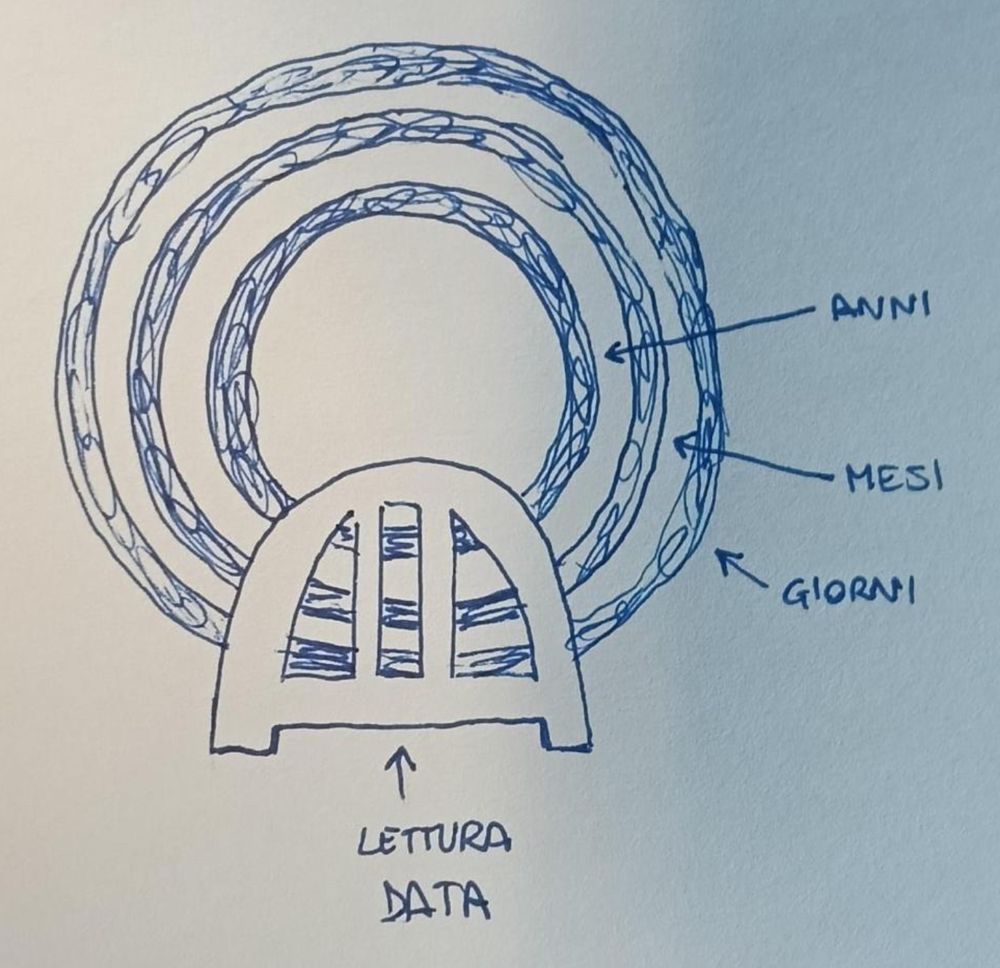
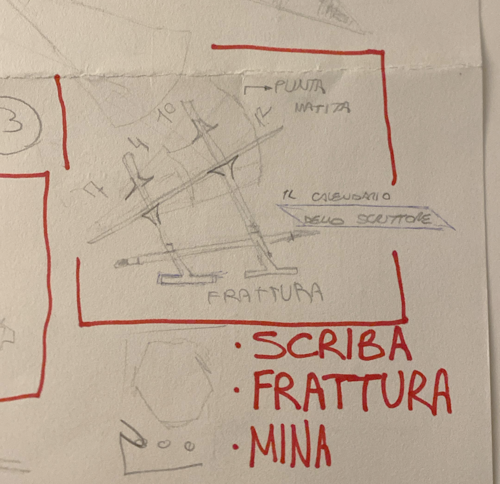
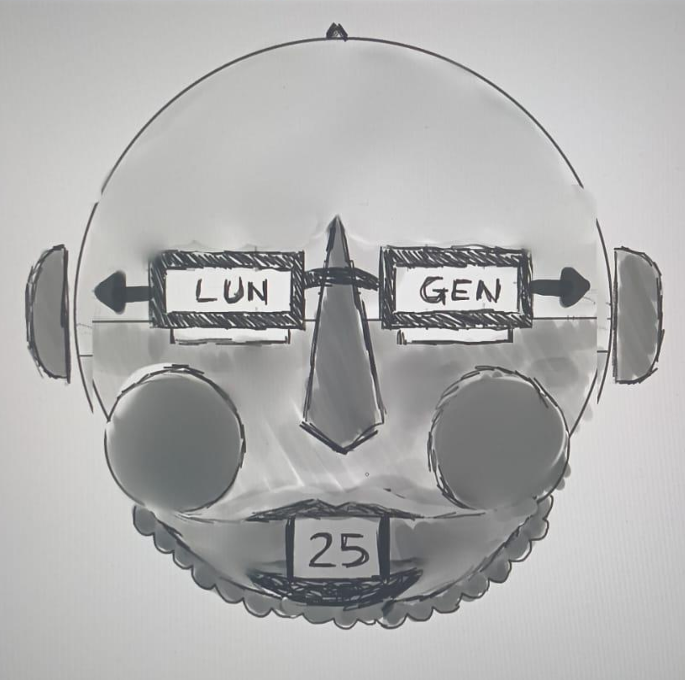
Il centro del progetto doveva essere il giunto per forma, da integrare nel modo più interessante e innovativo possibile.
Tra i primi sketch che abbiamo disegnato, solo uno è passato alla prima revisione. Era un calendario che ricordava la punta di una matita, con un supporto inferiore per una matita.
Dalla revisione è uscita l'idea che la matita potesse diventare parte del calendario, non solo un accessorio che ne definiva il target di utilizzo.
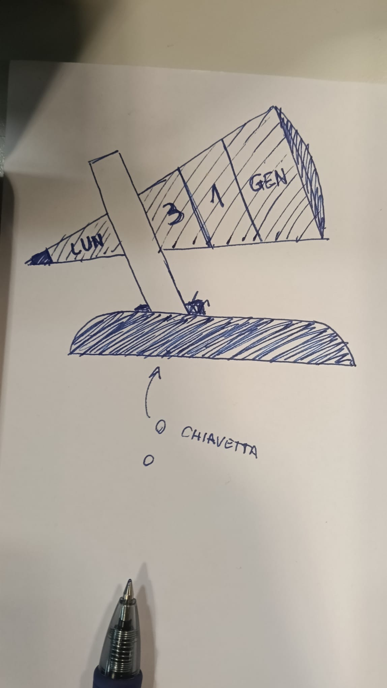
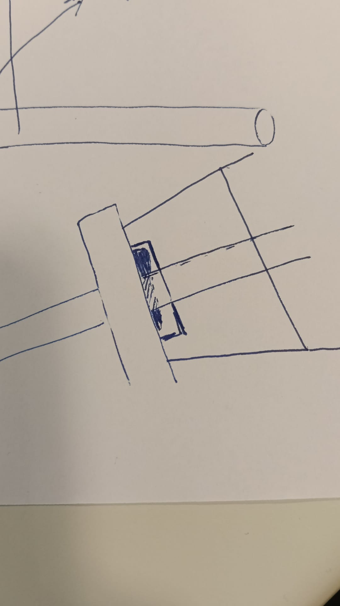
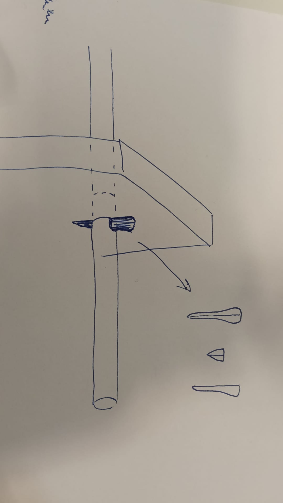
Dopo svariati incontri con il gruppo e un'altra serie di sketch, si è deciso che la matita dovesse essere un componente centrale del meccanismo di blocco.
Quando viene estratta dal calendario, l'attrito tra i vari quadranti e la staffa centrale rende impossibile settare una data specifica. La matita blocca la staffa rendendo utilizzabile il calendario.
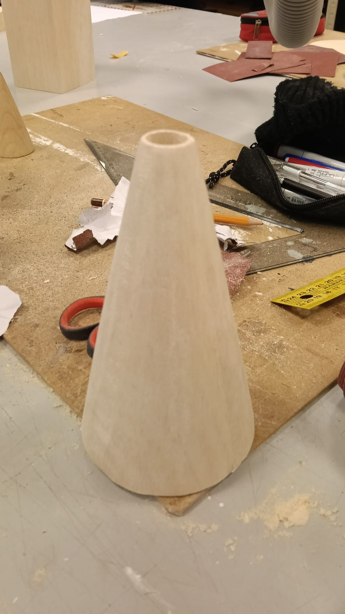
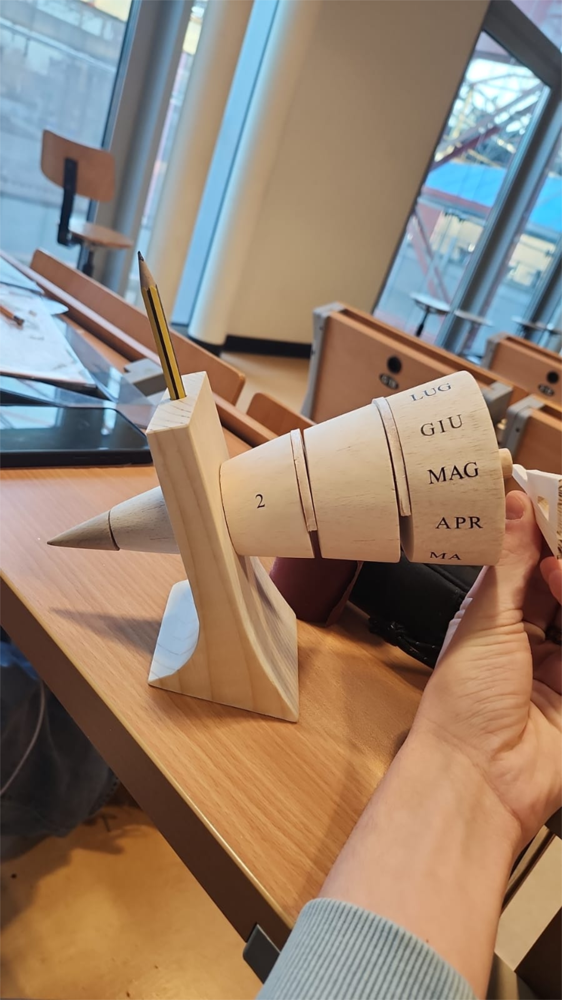

Siamo quindi passati alla costruzione vera e propria: utilizzando il laboratorio del politecnico, abbiamo utilizzato 3 tipi di legni diversi per i vari componenti (abete, balsa e faggio).
La base del calendario da due pezzi ad incastro è diventata un pezzo unico, rendendo ulteriormente più essenziale la forma complessiva.
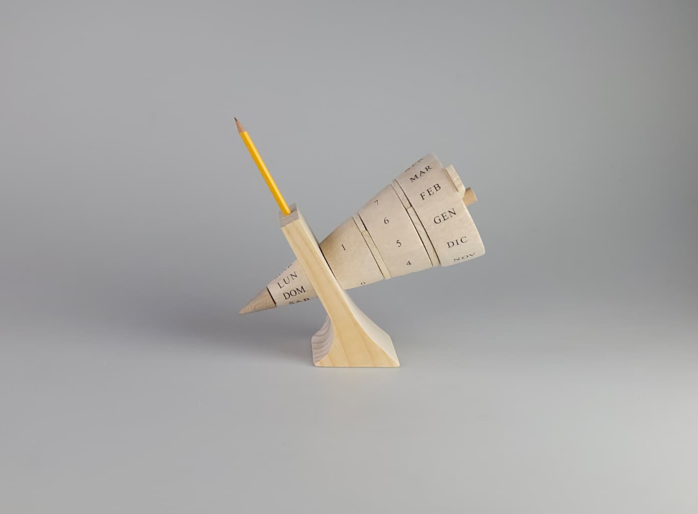
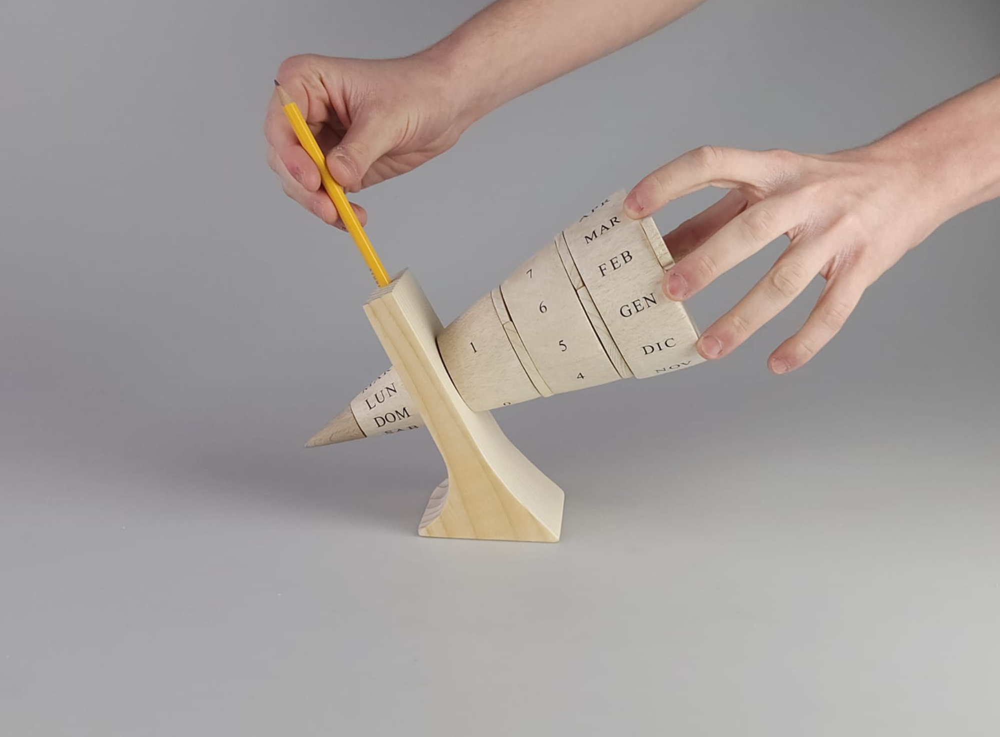
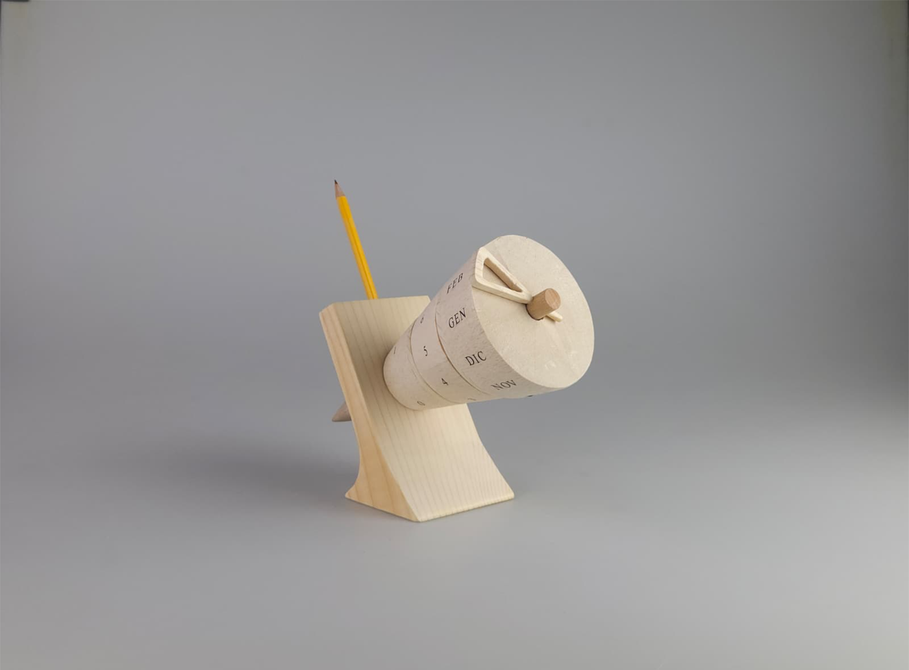
TORNA